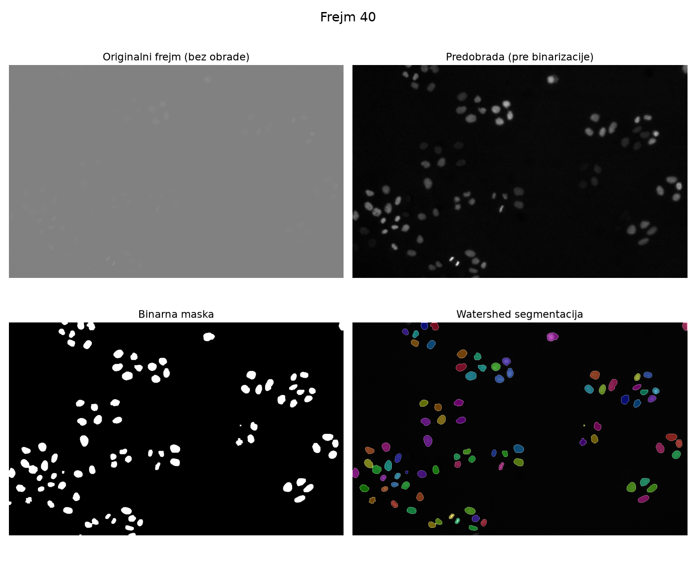
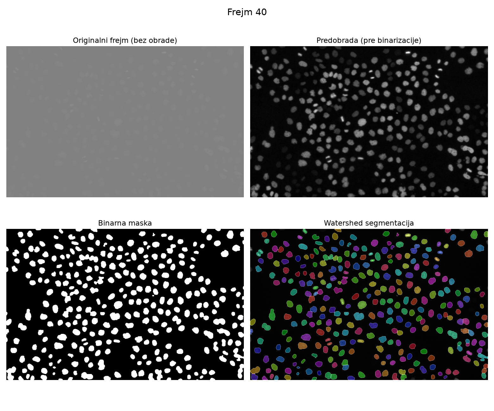
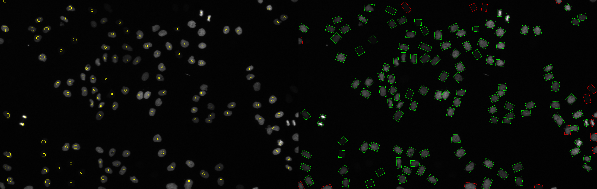
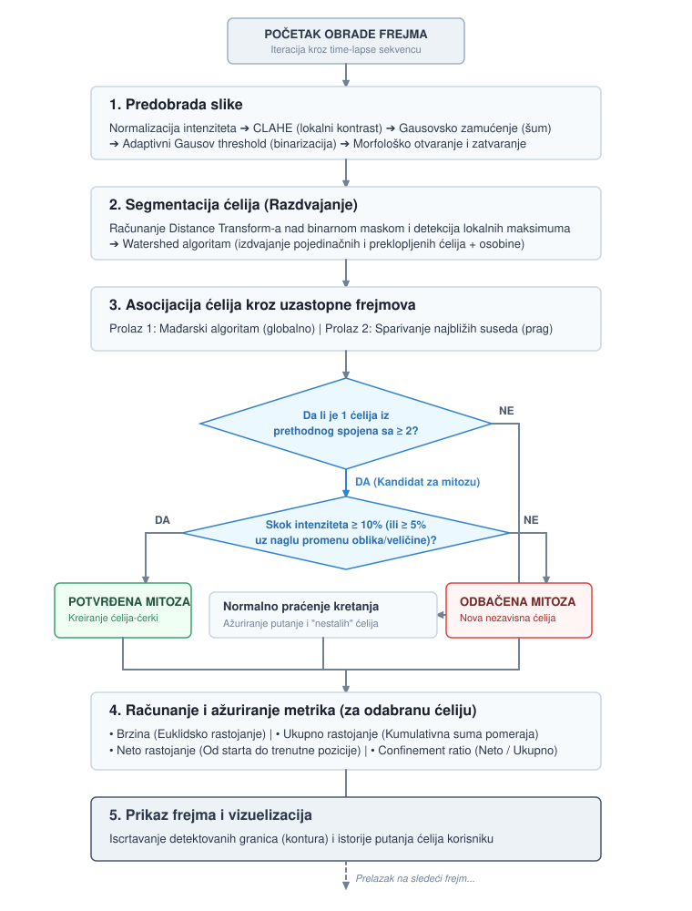

Posmatranje ponašanja ćelija važno je za razumevanje mehanizama funkcionisanja organizma, kao i za razumevanje nastanka i razvoja bolesti. Ručno praćenje njihovog kretanja korišćenjem velikog broja time-lapse mikroskopskih snimaka je naporno i dugotrajno, pa su metode računarske vizije od velike koristi za ovaj zadatak.
Automatsko praćenje ćelija ima svoje izazove. Različiti tipovi snimaka zahtevaju različite tehnike akvizicije. Osobine ćelija poput veličine, oblika, kretanja i preklapanja čine zadatak kompleksnim. Gustina populacije i neujednačeno osvetljenje slike dodatno otežavaju problem. Tehnike modelovanja poput Kalmanovog ili čestičnog filtera pokazale su se kao neprimenljive jer je kretanje ćelija nasumično i nepredvidivo.
Projekat obuhvata segmentaciju pojedinačnih ćelija i praćenje njihovog kretanja kroz vreme, detekciju mitoze u svakom frejmu, i prikaz četiri metrike za odabranu ćeliju u bilo kom trenutku: brzine, ukupnog rastojanja, neto rastojanja i koeficijenta ograničenosti (confinement ratio).
Ceo postupak se sastoji iz pet koraka koji se ponavljaju za svaki frejm ulazne sekvence: predobrada, segmentacija, asocijacija, računanje metrika i vizuelizacija.
Predobrada ima za cilj da izloži ćelije i kontrastira ih u odnosu na pozadinu radi lakše segmentacije. Slika se prvo normalizuje po intenzitetu, zatim se primenjuje CLAHE (Contrast Limited Adaptive Histogram Equalization) radi lokalnog izjednačavanja kontrasta, nakon čega sledi Gausovsko zamućenje radi smanjenja šuma i adaptivni Gausov threshold radi dobijanja binarne slike.
Adaptivni threshold je izabran jer lokalno prilagođava prag svetlim i tamnim regionima slike, umesto da koristi jedinstven globalni prag za celu sliku. Na kraju se primenjuje morfološko otvaranje, pa zatim morfološko zatvaranje, radi uklanjanja artefakata i preostalog šuma.


Kako bi se minimizovalo preklapanje objekata, za segmentaciju pojedinačnih ćelija koristi se watershed metoda. Nakon binarizacije, računa se distance transform binarne maske, čiji se lokalni maksimumi koriste kao markeri za watershed algoritam, sa ciljem da se dobiju odvojeni regioni za svaku ćeliju, uključujući i ćelije koje se dodiruju ili delimično preklapaju.
Za svaku segmentiranu ćeliju beleže se centroid, veličina i ugao orijentacije elipse fitovane na region, srednji intenzitet, elongacija i površina. Srednji intenzitet ćelije se računa iz originalne, grayscale slike, unutar eliptičnog regiona te ćelije. Sve ove vrednosti se pamte kroz istoriju svake ćelije i koriste se u proveri prilikom detekcije mitoze.
Važno je napomenuti da ni same ground-truth anotacije nisu savršene. Pri ručnoj proveri primećeno je da postoji određen broj ćelija na snimku koje uopšte nisu obeležene u GT maskama, a trebalo bi da budu. Ova neusklađenost direktno utiče na izmerenu grešku sistema: deo onoga što metrika beleži kao "grešku detekcije" zapravo je propust u samoj anotaciji, ne u pipeline-u.

Asocijacija ćelija između uzastopnih frejmova izvodi se u dva prolaza. U prvom prolazu koristi se Mađarski (Hungarian) algoritam koji nalazi optimalno globalno pridruživanje ćelija tekućeg frejma ćelijama prethodnog frejma na osnovu prostornog rastojanja centroida, uz odbacivanje pridruživanja čije je rastojanje veće od praga, definisanog kao odnos rastojanja i dijagonale slike. Preostale, još nepridružene ćelije prolaze kroz drugi prolaz, gde se svaka jednostavno pridružuje najbližoj ćeliji iz prethodnog frejma, opet uz isti prag rastojanja.
Kada je jedna ćelija iz prethodnog frejma pridružena sa dve ili više ćelija u tekućem frejmu, ovo se tretira kao kandidat za mitozu.
Da bi se ovaj problem rešio, dodate su dve dopune:
Nakon inicijalnog pridruživanja, za svaku već pridruženu ćeliju proverava se da li postoji obližnja neasocirana ćelija koja bi trebalo da bude njena sestrinska ćelija nastala deobom; ako je takva ćelija bliža majci nego svom trenutnom paru, preusmerava se na majku, čime se ispravno prepoznaju oba deteta prilikom deobe.
Posmatranjem samog snimka detekcije uočeno je nekoliko promena pred mitozu. Nekoliko frejmova pred deobu jezgro ćelije "zasija", kod nekih dođe i do nagle rotacije i smanjenja veličine, uz propratno izduživanje. Na osnovu tih uvida, za svakog kandidata za mitozu proverava se jedan od sledeća dva uslova:
| Uslov | Opis |
|---|---|
| A: jak skok intenziteta | Srednji intenzitet majke porastao za najmanje 10% u odnosu na prosek prethodna 4 frejma. |
| B: blag skok i promena oblika | Intenzitet porastao za najmanje 5%, uz istovremenu promenu oblika i veličine ćelije. |
Ako nijedan od ova dva uslova nije ispunjen, kandidat se odbacuje kao mitoza i postaje nova, nezavisna ćelija.
Usled različitog osvetljenja i kontrasta prilikom akvizicije, dolazi do toga da se ćelija potpuno izgubi iz kadra na par frejmova, a onda vrlo brzo ponovo pojavi. To kasnije uzrokuje dodelu novog identifikatora ćeliji koja je zapravo već bila uočena u prethodnim frejmovima, situacija koja je takođe narušavala detekciju mitoze. Stoga, ovim ćelijama se dodeljuje popustljiviji prag rastojanja, srazmeran broju frejmova koliko su odsutne, jer su se u međuvremenu mogle više pomeriti.
Ceo tok obrade jednog frejma, od predobrade do prikaza korisniku, uključujući granu odlučivanja za detekciju mitoze opisanu u prethodnom poglavlju, prikazan je na sledećoj slici.

Za odabranu ćeliju, u bilo kom frejmu, prate se sledeće četiri veličine:
| Metrika | Opis |
|---|---|
| Brzina | Euklidsko rastojanje centroida u odnosu na prethodni frejm. |
| Ukupno rastojanje | Kumulativna suma pomeraja od prvog pojavljivanja ćelije. |
| Neto rastojanje | Rastojanje od pozicije prvog pojavljivanja do trenutne pozicije. |
| Confinement ratio | Odnos neto i ukupnog rastojanja: koliko je kretanje usmereno naspram nasumičnog. |
Evaluacija je urađena na sekvencama Fluo-N2DL-HeLa skupa podataka, koristeći ground-truth anotacije iz Cell Tracking Challenge formata. Pipeline se pokreće nad celom sekvencom, a svaki detektovani centroid ćelije se mapira na GT identitet proverom vrednosti piksela GT maske na toj poziciji.
Na osnovu ovog mapiranja računaju se tri grupe metrika, preko svih frejmova:
Evaluacija je izvršena na dve sekvence Fluo-N2DL-HeLa skupa podataka: prvoj, sa umerenom gustinom populacije ćelija, i drugoj, sa znatno gušćom populacijom. Poređenje ove dve sekvence pokazuje kako gustina populacije utiče na kvalitet praćenja.
Krajnji izlaz pipeline-a, koji uključuje detekciju, segmentaciju i praćenje putanja, pušten je preko cele sekvence od 92 frejma:
Kod gušće populacije ćelije su bliže jedna drugoj i češće se dodiruju ili preklapaju, što otežava i segmentaciju (watershed metoda češće spaja susedne ćelije u jedan region) i asocijaciju (Mađarski algoritam ima više kandidata na sličnom rastojanju za pridruživanje). Posledica toga je primetno veći broj ID-switch-eva u odnosu na prvu, ređu sekvencu, kao i nešto veća greška u broju detektovanih ćelija po frejmu.
Preko svih 92 frejma sekvence 1, prosečan odnos greške u odnosu na GT broj ćelija iznosi 2.30% (σ = 1.85%), bez sistematskog rasta greške kako se broj ćelija u sekvenci povećava (od oko 40 ćelija u ranim frejmovima do oko 137 ćelija u poslednjim frejmovima). Kod sekvence 2, taj odnos iznosi 3.29% (σ = 2.31%), što je veće u skladu sa očekivanjem da gušća populacija otežava segmentaciju.
| Metrika | Sekvenca 1 | Sekvenca 2 (gušća) |
|---|---|---|
| Prosečna greška broja ćelija | 2.30% | 3.29% |
Prosečan odnos neuspešnih pridruživanja iznosi 1.24% kod sekvence 1 i 1.33% kod sekvence 2, dakle stope su slične. Znatno upadljivija razlika je u broju ID-switch-eva: 56 kroz 92 frejma sekvence 1, naspram 307 kod sekvence 2, što potvrđuje da gušća populacija znatno otežava održavanje identiteta ćelija kroz vreme, iako sama stopa neuspešnih pridruživanja ostaje slična.
| Metrika | Sekvenca 1 | Sekvenca 2 (gušća) |
|---|---|---|
| Neuspešna pridruživanja | 1.24% | 1.33% |
| ID-switch-eva | 56 | 307 |
Od 94 GT deobe u sekvenci 1, sistem je detektovao 81, od čega 66 tačnih pogodaka, 15 lažno pozitivnih i 28 propuštenih. Od 212 GT deoba u sekvenci 2, detektovano je 181, od čega 131 tačan pogodak, 50 lažno pozitivnih i 81 propušten. I preciznost i odziv opadaju kod gušće sekvence: gušća populacija dovodi do više grešaka u segmentaciji (watershed spaja ćelije-ćerke u jedan region, što smanjuje odziv) i do više slučajeva kada dve susedne, nezavisne ćelije budu pogrešno protumačene kao majka i dete uprkos proveri intenziteta i oblika (što povećava broj lažno pozitivnih i time smanjuje preciznost).
| Metrika | Sekvenca 1 | Sekvenca 2 (gušća) |
|---|---|---|
| GT deobe | 94 | 212 |
| Detektovane deobe | 81 | 181 |
| Tačni pogoci (TP) | 66 | 131 |
| Lažno pozitivni (FP) | 15 | 50 |
| Propušteni (FN) | 28 | 81 |
| Preciznost | 81.48% | 72.38% |
| Odziv | 70.21% | 61.79% |
| F1 mera | 75.43% | 66.67% |
Preciznost od 81.48% kod sekvence 1 pokazuje da je provera na osnovu intenziteta i oblika, uvedena upravo zbog problema opisanog u poglavlju o metodama, efikasna u filtriranju lažnih pozitiva, dok odziv od 70.21% pokazuje da se ipak dobar deo stvarnih deoba propušta, najverovatnije zato što segmentacija ne razdvoji ćelije-ćerke na dva odvojena regiona, ili zato što provera intenziteta i oblika odbaci validnu deobu kada promena u tom trenutku nije dovoljno izražena.
Uporedni prikaz jednog uspešnog i jednog neuspešnog slučaja detekcije deobe:
Predstavljeno rešenje je u potpunosti algoritamsko, zasnovano na klasičnim metodama obrade slike (adaptivna binarizacija, watershed segmentacija, Mađarski algoritam za asocijaciju, pravila zasnovana na pragovima za detekciju mitoze). Ovakav pristup je transparentan i lako je razumeti zašto sistem donosi određenu odluku, ali je istovremeno osetljiv na ručno podešene pragove i ne generalizuje se uvek dobro na scene sa gušćom populacijom ili izraženijim preklapanjem ćelija.
Realno unapređenje bi podrazumevalo prelazak na pristupe zasnovane na dubokom učenju, kako za segmentaciju tako i za praćenje:
Ovakav pomak bi verovatno poboljšao rezultate upravo u slučajevima gde trenutni pipeline najviše greši: kod gušće populacije ćelija i kod deoba koje ne prate tipičan obrazac promene intenziteta i oblika.